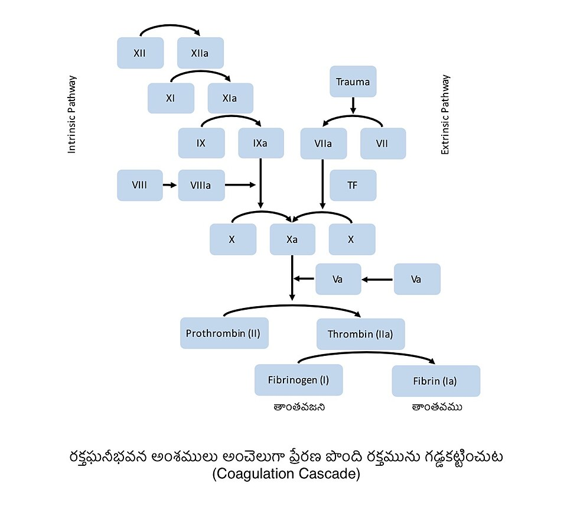

Почка: фильтрация, транспорт, концентрирование
Зачем почка фильтрует всё и возвращает почти всё; барьер и силы фильтрации, противоточный механизм, гормональная регуляция, клиренс.
Зачем почка фильтрует всё и возвращает почти всё; барьер и силы фильтрации, противоточный механизм, гормональная регуляция, клиренс.

Автоматизм и проведение, фазы цикла с давлениями, петля «давление — объём», преднагрузка и постнагрузка, венозный возврат.

Механика вдоха, сурфактант, мёртвое пространство, зоны Веста, кривая диссоциации, хеморецепторы, чтение газов крови.

Потенциал покоя, ворота каналов, фазы потенциала действия, миелин, нервно-мышечный синапс, точки приложения ядов и лекарств.

Эндотелий, адгезия и агрегация, клеточная модель свёртывания, фибринолиз, что ловят АЧТВ и МНО, триада Вирхова.